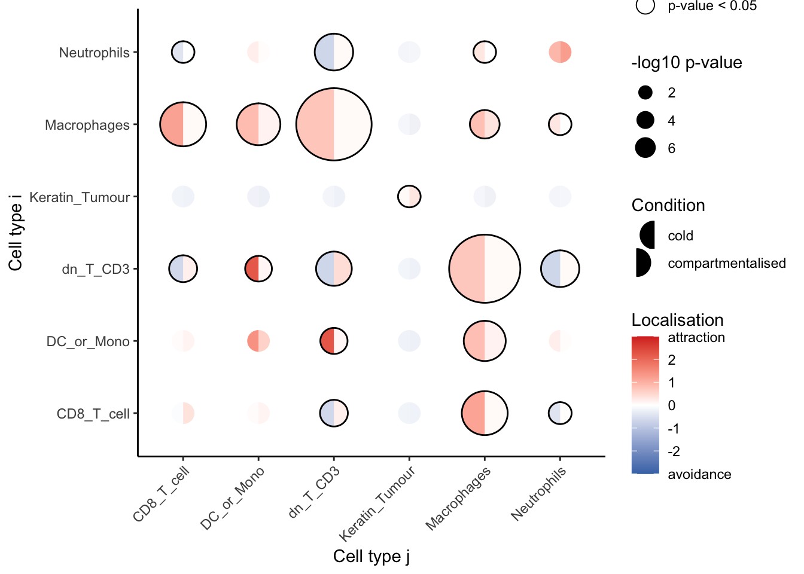

8 Cell localisation between pairs of cell types
So far, we have segmented our cells, performed normalisation to mitigate batch effects, and annotated our cells. This completes our pre-processing stage, and we can move on to analysing our data. One of the primary motivations behind pursuing spatial technology (as opposed to space-agnostic technologies such as scRNAseq) is that it allows us to tease out whether changes are occurring spatially, i.e. are two cell types closer together in a disease state vs a non-disease state. Whilst these changes are often visually obvious, more advanced statistical modelling is required to quantify localisation and dispersion relationships. In this section, we demonstrate the use of our spicyR packaege for quantifying cell type localisation.
# set parameters
set.seed(51773)
use_mc <- TRUE
if (use_mc) {
nCores <- max(parallel::detectCores()/2, 1)
} else {
nCores <- 1
}
BPPARAM <- simpleSeg:::generateBPParam(nCores)
theme_set(theme_classic())8.1 Quantifying cell type co-localisation with spicyR
spicyR provides a metric to quantify the degree of localisation or dispersion between two cell types. It then tests for changes in this co-localisation metric across different disease states or groups.
Here, we will use the Keren 2018 dataset to demonstrate the use of spicyR. The data is stored as a SpatialExperiment object within the SpatialDatasets package and contains single-cell spatial data from 41 images for three types of breast cancer tumours (cold, compartmentalised, and mixed).
kerenSPE <- SpatialDatasets::spe_Keren_2018()
# remove any missing data in our outcome columns
kerenSPE = kerenSPE[, complete.cases(colData(kerenSPE)[, c("Censored", "Survival_days_capped*",
"tumour_type")])]Eleven immune cell types were identified in this dataset by the original authors: (double negative CD3 T cells, CD4 T cells, B cells, monocytes, macrophages, CD8 T cells, neutrophils, natural killer cells, dendritic cells, regulatory T cells), 2 structural cell types (endothelial, mesenchymal), 2 tumour cell types (keratin+ tumour, tumour) and one unidentified category.
8.1.1 Linear modelling
We use the L-function to measure the degree of co-localisation between two cell types. The L-function is a variance-stabilised version of the K-function given by the equation
\[ \widehat{L_{ij}} (r) = \sqrt{\frac{\widehat{K_{ij}}(r)}{\pi}} \]
with \(\widehat{K_{ij}}\) defined as
\[ \widehat{K_{ij}} (r) = \frac{|W|}{n_i n_j} \sum_{n_i} \sum_{n_j} 1 \{d_{ij} \leq r \} e_{ij} (r) \]
where \(\widehat{K_{ij}}\) summarises the degree of co-localisation of cell type \(j\) with cell type \(i\), \(n_i\) and \(n_j\) are the number of cells of type \(i\) and \(j\), \(|W|\) is the image area, \(d_{ij}\) is the distance between two cells, \(r\) is the chosen radius, and \(e_{ij} (r)\) is an edge correcting factor.
To assess whether the observed co-localisation deviates from what would be expected under random spatial distribution, the experimental L-function is compared to a theoretical L-function derived from a Poisson point process. The Poisson function assumes that cells are distributed completely at random within the image, meaning there are no underlying spatial patterns such as attraction or repulsion between cell types. This provides a baselineexpectation against which the observed clustering or segregation can be evaluated.
Specifically, the mean difference between the experimental function and the theoretical function is used as a measure for the level of localisation, defined as
\[ u = \sum_{r' = r_{\text{min}}}^{r_{\text{max}}} \widehat L_{ij, \text{Experimental}} (r') - \widehat L_{ij, \text{Poisson}} (r') \]
where \(u\) is the sum is taken over a discrete range of \(r\) between \(r_{\text{min}}\) and \(r_{\text{max}}\). Differences of the statistic \(u\) between two conditions is modelled using a weighted linear model.
8.1.2 Test for changes in localisation for a specific pair of cells
Firstly, we can test whether one cell type tends to be more localised with another cell type in one condition compared to the other. This can be done using the spicy function, where we specify the condition parameter.
In this example, we want to see whether or not neutrophils (to) tend to be found around CD8 T cells (from) in compartmentalised tumours compared to cold tumours. Given that there are 3 conditions, we can specify the desired conditions by setting the order of our condition factor. spicy will choose the first level of the factor as the base condition and the second level as the comparison condition. spicy will also naturally coerce the condition column into a factor if it is not already a factor. The radius over which to calculate the L-function can be specified using the Rs argument. By default, spicy calculates the L-function over a range of radii.
The column containing cell type annotations and image IDs can be specified using the cellType and imageID arguments respectively. By default, spicy uses the columns named cellType and imageID.
We obtain a spicy object which details the results of the modelling performed. The topPairs function can be used to obtain the associated coefficients and p-value.
spicyTestPair <- spicy(
kerenSPE,
condition = "tumour_type",
from = "CD8_T_cell",
to = "Neutrophils",
BPPARAM = BPPARAM
)
topPairs(spicyTestPair) intercept coefficient p.value adj.pvalue
CD8_T_cell__Neutrophils -91.5703 94.5402 0.0006792206 0.0006792206
from to
CD8_T_cell__Neutrophils CD8_T_cell NeutrophilsTime for this code chunk to run with 5.5 cores: 2.29 seconds
As the coefficient in spicyTestPair is positive, we find that neutrophils are significantly more likely to be found near CD8 T cells in the compartmentalised tumours group compared to the cold tumour group.
How do we select an optimal value for Rs?
The choice of
Rswill depend on the degree of co-localistion we expect to see and the biological context. Choosing a small value ofRsis optimal for examining local spatial relationships, and larger values ofRswill reveal global spatial relationships.When the degree of localistion is unknown, it is best to choose a range of radii to define the co-localisation statistic to capture both local and global relationships.
8.1.3 Test for changes in localisation for all pairwise cell combinations
We can perform what we did above for all pairwise combinations of cell types by excluding the from and to parameters in spicy. Additional covariates can be added using the covariates argument.
intercept coefficient p.value adj.pvalue
Macrophages__dn_T_CD3 64.26984 -57.90199 2.240072e-08 6.160198e-06
dn_T_CD3__Macrophages 62.44605 -55.84542 5.987026e-08 8.232161e-06
Macrophages__CD8_T_cell 105.28040 -98.30184 2.151824e-05 1.525685e-03
CD8_T_cell__Macrophages 103.94483 -96.91337 2.219178e-05 1.525685e-03
Macrophages__DC_or_Mono 74.32427 -60.87678 3.696109e-05 2.032860e-03
DC_or_Mono__Macrophages 72.47461 -59.14177 5.498388e-05 2.520095e-03
Neutrophils__dn_T_CD3 -60.45705 66.94703 1.268374e-04 4.534466e-03
dn_T_CD3__Neutrophils -60.45215 67.47179 1.319117e-04 4.534466e-03
dn_T_CD3__dn_T_CD3 -60.82745 97.65301 2.359087e-04 7.208323e-03
Macrophages__Macrophages 70.42380 -40.78211 9.662288e-04 1.791030e-02
from to
Macrophages__dn_T_CD3 Macrophages dn_T_CD3
dn_T_CD3__Macrophages dn_T_CD3 Macrophages
Macrophages__CD8_T_cell Macrophages CD8_T_cell
CD8_T_cell__Macrophages CD8_T_cell Macrophages
Macrophages__DC_or_Mono Macrophages DC_or_Mono
DC_or_Mono__Macrophages DC_or_Mono Macrophages
Neutrophils__dn_T_CD3 Neutrophils dn_T_CD3
dn_T_CD3__Neutrophils dn_T_CD3 Neutrophils
dn_T_CD3__dn_T_CD3 dn_T_CD3 dn_T_CD3
Macrophages__Macrophages Macrophages MacrophagesTime for this code chunk to run with 5.5 cores: 10.56 seconds
Again, we obtain a spicy object which outlines the result of the linear models performed for each pairwise combination of cell types.
We can also examine the L-function metrics of individual images by using the convenient bind function on our spicyTest results object.
bind(spicyTest)[1:5, 1:5] imageID condition Keratin_Tumour__Keratin_Tumour
1 1 mixed -2.300602
2 2 mixed -1.989699
3 3 compartmentalised 11.373530
4 4 compartmentalised 33.931133
5 5 compartmentalised 17.922818
dn_T_CD3__Keratin_Tumour B_cell__Keratin_Tumour
1 -5.298543 -20.827279
2 -16.020022 3.025815
3 -21.857447 -24.962913
4 -36.438476 -40.470221
5 -20.816783 -38.138076The results can be represented as a bubble plot using the signifPlot function.
signifPlot(
spicyTest,
breaks = c(-3, 3, 1),
marksToPlot = c("Macrophages", "DC_or_Mono", "dn_T_CD3", "Neutrophils",
"CD8_T_cell", "Keratin_Tumour"))
Here, we can observe that the most significant relationships occur between macrophages and double negative CD3 T cells, suggesting that the two cell types are far more dispersed in compartmentalised tumours compared to cold tumours. In general, it appears that our immune cell types become more dispersed in compartmentalised tumours compared to cold tumours.
To examine a specific cell type-cell type relationship in more detail, we can use spicyBoxplot and specify either from = "Macrophages" and to = "dn_T_CD3" or rank = 1.
spicyBoxPlot(results = spicyTest,
# from = "Macrophages",
# to = "dn_T_CD3"
rank = 1)The boxplot confirms what we originally found in the bubble plot. Macrophages and double negative CD3 T cells are significantly more dispersed (lower L-function score) in compartmentalised tumours compared to cold tumours.
8.1.4 Linear modelling for custom metrics
spicyR can also be applied to custom distance or abundance metrics. A kNN interactions graph can be generated with the function buildSpatialGraph from the imcRtools package. This generates a colPairs object inside of the SpatialExperiment object.
spicyR provides the function convPairs for converting a colPairs object into an abundance matrix by calculating the average number of nearby cells types for every cell type for a given k. For example, if there exists on average 5 neutrophils for every macrophage in image 1, the column Neutrophil__Macrophage would have a value of 5 for image 1.
kerenSPE <- imcRtools::buildSpatialGraph(kerenSPE,
img_id = "imageID",
type = "knn", k = 20,
coords = c("x", "y"))
pairAbundances <- convPairs(kerenSPE,
colPair = "knn_interaction_graph")
head(pairAbundances["B_cell__B_cell"]) B_cell__B_cell
1 12.7349608
10 0.2777778
11 0.0000000
12 1.3333333
13 1.2200957
14 0.0000000The custom distance or abundance metrics can then be included in the analysis with the alternateResult parameter.
spicyTestColPairs <- spicy(
kerenSPE,
condition = "tumour_type",
alternateResult = pairAbundances,
weights = FALSE,
BPPARAM = BPPARAM
)
topPairs(spicyTestColPairs) intercept coefficient p.value adj.pvalue
Unidentified__CD8_T_cell 0.151346975 0.60159494 0.01687494 0.7034781
Keratin_Tumour__CD8_T_cell 0.117283437 -0.09850513 0.01870063 0.7034781
NK__CD8_T_cell 0.113835243 0.53296190 0.02304383 0.7034781
B_cell__Tumour 0.016326531 0.23053781 0.02626946 0.7034781
Other_Immune__DC_or_Mono 0.144559342 -0.12839560 0.02895838 0.7034781
dn_T_CD3__Neutrophils 0.029731407 0.29756814 0.03260677 0.7034781
Tregs__CD4_T_cell 0.195913616 0.51002005 0.03536184 0.7034781
dn_T_CD3__NK 0.005405405 0.18354680 0.04525721 0.7034781
Other_Immune__NK 0.013333333 0.22116787 0.04660829 0.7034781
CD4_T_cell__DC 2.600122100 -1.36259931 0.04845418 0.7034781
from to
Unidentified__CD8_T_cell Unidentified CD8_T_cell
Keratin_Tumour__CD8_T_cell Keratin_Tumour CD8_T_cell
NK__CD8_T_cell NK CD8_T_cell
B_cell__Tumour B_cell Tumour
Other_Immune__DC_or_Mono Other_Immune DC_or_Mono
dn_T_CD3__Neutrophils dn_T_CD3 Neutrophils
Tregs__CD4_T_cell Tregs CD4_T_cell
dn_T_CD3__NK dn_T_CD3 NK
Other_Immune__NK Other_Immune NK
CD4_T_cell__DC CD4_T_cell DCsignifPlot(
spicyTestColPairs,
marksToPlot = c("Macrophages", "dn_T_CD3", "CD4_T_cell",
"B_cell", "DC_or_Mono", "Neutrophils", "CD8_T_cell")
)
Using abudance metric yields no cell type pairs which are significantly dispersed or localised in compartmentalised tumours compared to cold tumours.
8.1.5 Mixed effects modelling
spicyR supports mixed effects modelling when multiple images are obtained for each subject. In this case, subject is treated as a random effect and condition is treated as a fixed effect. To perform mixed effects modelling, we can specify the subject parameter in the spicy function.
To demonstrate spicyR’s functionality with mixed effects models, we will use the Damond 2019 dataset.
# load in data
data("diabetesData")
# mixed effects modelling with spicy
spicyMixedTest <- spicy(
diabetesData,
condition = "stage",
subject = "case",
BPPARAM = BPPARAM
)Time for this code chunk to run with 5.5 cores: 113.56 seconds
As before, we generate a spicy results object, and we can use topPairs to identify the most significant cell type pairs.
topPairs(spicyMixedTest) intercept coefficient p.value adj.pvalue
beta__delta 6.081500e+01 -15.433244 0.0006616410 0.09171134
delta__beta 6.090722e+01 -15.276364 0.0007164949 0.09171134
B__Th -4.680923e-15 10.480124 0.0127535339 0.42316692
delta__delta 7.021912e+01 -16.358092 0.0155005315 0.42316692
Th__B 1.281787e-15 10.003451 0.0173028442 0.42316692
B__unknown 2.309876e-15 4.584274 0.0182158635 0.42316692
otherimmune__naiveTc -3.179087e+00 11.944638 0.0200230308 0.42316692
unknown__macrophage 4.339584e+00 -5.274671 0.0222620877 0.42316692
unknown__B -1.508529e-15 4.680750 0.0244004305 0.42316692
macrophage__unknown 4.305429e+00 -4.886438 0.0249693456 0.42316692
from to
beta__delta beta delta
delta__beta delta beta
B__Th B Th
delta__delta delta delta
Th__B Th B
B__unknown B unknown
otherimmune__naiveTc otherimmune naiveTc
unknown__macrophage unknown macrophage
unknown__B unknown B
macrophage__unknown macrophage unknownWe can use signifPlot to visualise the results.
signifPlot(spicyMixedTest,
marksToPlot = c("beta", "delta", "B", "Th", "otherimmune",
"naiveTc", "macrophage", "Tc", "stromal"))
The graph shows a significant decrease in co-localisation between delta and beta cells in the pancreas within the onset diabetes group compared to the non-diabetes group. Additionally, there is a significant increase in co-localisation among certain immune cell groups, including B cells and Th cells, as well as naive Tc cells and other immune cells. These findings align with the results reported in the original study.
8.1.6 Performing survival analysis
spicy can also be used to perform survival analysis to asses whether changes in co-localisation between cell types are associated with survival probability. spicy fits a Cox proportional hazards model to assess the risk of death with the L-function as the explanatory variable. If there are multiple images provided per subject, spicy fits a Cox mixed effects model instead.
To perform survival analysis, spicy requires the SingleCellExperiment object being used to contain a column called survival as a Surv object.
kerenSPE$event = 1 - kerenSPE$Censored
kerenSPE$survival = Surv(kerenSPE$`Survival_days_capped*`, kerenSPE$event)We can then perform survival analysis using the spicy function by specifying condition = "survival". The corresponding coefficients and p-values can be accessed through the survivalResults slot in the spicy results object.
# Running survival analysis
spicySurvival = spicy(kerenSPE,
condition = "survival",
BPPARAM = BPPARAM)
# top 10 significant pairs
head(spicySurvival$survivalResults, 10)# A tibble: 10 × 4
test coef se.coef p.value
<chr> <dbl> <dbl> <dbl>
1 Other_Immune__Tregs 0.0236 0.00868 0.00000850
2 CD4_T_cell__Tregs 0.0178 0.00688 0.0000119
3 Tregs__Other_Immune 0.0237 0.00875 0.0000124
4 Tregs__CD4_T_cell 0.0171 0.00677 0.0000290
5 CD8_T_cell__CD8_T_cell 0.00605 0.00273 0.000329
6 Tumour__CD8_T_cell -0.0307 0.0115 0.000582
7 CD8_T_cell__Tumour -0.0307 0.0117 0.000667
8 CD4_T_cell__dn_T_CD3 0.00850 0.00354 0.000710
9 dn_T_CD3__CD4_T_cell 0.00841 0.00354 0.000925
10 DC__Other_Immune -0.0288 0.0123 0.00105 Time for this code chunk to run with 5.5 cores: 8.63 seconds
signifPlot(spicySurvival,
marksToPlot = c("Tumour", "Tregs", "NK", "Neutrophils", "Mono_or_Neu",
"Macrophages", "Keratin_Tumour", "dn_T_CD3", "DC_or_Mono",
"DC", "CD8_T_cell", "CD4_T_cell", "B_cell"))
From the table and the graph above, we can see that the coefficient for Tumour__CD8_T_cell is negative, indicating that localisation between the two cell types is associated with a better prognosis for the patient. We can also see that localisation between most immune cell types (Neutrophils__CD8_T_cell, Tregs__CD4_T_cell, dn_T_CD3__CD4_T_cell) is associated with worse outcomes for the patient.
We can examine the relationship for one pair of cell types (Tumour__CD8_T_cell) more closely using a Kaplan-Meier curve. Below, we extract the survival data from kerenSPE and create a Surv object.
# extracting survival data
survData <- kerenSPE |>
colData() |>
data.frame() |>
select(imageID, survival) |>
unique()
# creating survival vector
kerenSurv <- survData$survival
names(kerenSurv) <- survData$imageID
kerenSurv 1 2 3 4 5 6 7 8 9 10 11 12 13
2612 745 3130+ 2523+ 1683+ 2275+ 584 946 3767+ 3822+ 3774+ 4353+ 1072
14 15 16 17 18 19 20 21 23 24 25 26 27
4145+ 1754 530 2842 5063+ 3725+ 4761+ 635 91 194 4785+ 4430+ 3658
28 29 31 32 33 34 35 36 37 39 40 41
3767+ 1319 1009 1568+ 1738+ 2832+ 2759+ 3063+ 2853+ 2096+ 3573 3355+ We can then convert our L-function metrics into a binary metric with two categories: Localised and Dispersed, and plot a Kaplan-Meier curve to view its relationship to survival probability.
# obtain L-function values for a specific cell type
# and convert into localised/dispersed based on the median
survRelationship = bind(spicySurvival)[["Tumour__CD8_T_cell"]]
survRelationship = ifelse(survRelationship > median(survRelationship, na.rm = TRUE),
"Localised", "Dispersed")
# ensuring consistency and removing missing values
names(survRelationship) = names(kerenSurv)
survRelationship = survRelationship[!is.na(names(survRelationship))]
kerenSurv = kerenSurv[names(kerenSurv) %in% names(survRelationship)]
# plotting Kaplan-Meier curve
survfit2(kerenSurv ~ survRelationship) |>
ggsurvfit() +
ggtitle("Tumour__CD8_T_cell")
The KM curve aligns with that we observed from the bubble plot.
8.1.7 Accounting for tissue inhomogeneity
The spicy function can also account for tissue inhomogeneity to avoid false positives or negatives. This can be done by setting the sigma = parameter within the spicy function. By default, sigma is set to NULL, and spicy assumes a homogeneous tissue structure.
To demonstrate why sigma is a useful parameter, we examine the degree of co-localisation between Keratin_Tumour__Neutrophils in one image using the getPairwise function, which returns the L-function values for each cell type pair. We set the radius over which the L-function should be calculated (Rs = 100) and specify sigma = NULL.
# filter SPE object to obtain image 24 data
kerenSubset = kerenSPE[, colData(kerenSPE)$imageID == "24"]
pairwiseAssoc = getPairwise(kerenSubset,
sigma = NULL,
Rs = 100) |>
as.data.frame()
pairwiseAssoc[["Keratin_Tumour__Neutrophils"]][1] 10.88892The calculated L-function is positive, indicating attraction between the two cell types.
When we specify sigma = 20 and re-calculate the L-function, it indicates that there is no relationship between Keratin_Tumour and Neutrophils, i.e., there is no major attraction or dispersion, as it now takes into account tissue inhomogeneity.
pairwiseAssoc = getPairwise(kerenSubset,
sigma = 20,
Rs = 100) |> as.data.frame()
pairwiseAssoc[["Keratin_Tumour__Neutrophils"]][1] 0.9024836To understand why this might be happening, we can take a closer look at the relationship between Keratin_Tumour and Neutrophils. The plotImage function allows us to plot any two cell types for a specific image. Below, we plot image 24 for the Keratin_Tumour__Neutrophils relationship by specifying from = Keratin_Tumour and to = Neutrophils.
plotImage(kerenSPE, imageToPlot = "24",
from = "Keratin_Tumour",
to = "Neutrophils")
Plotting image 24 shows that the supposed co-localisation occurs due to the dense cluster of cells near the bottom of the image, and when we take this into account, the localisation disappears.
8.1.8 Adjusting for cell count
The L-function (and by extension, the co-localisation score) is sensitive to the number of cells in an image. Too few cells can cause the L-function to become unstable and obscure meaningful spatial relationships. The issue is particularly pronounced when there is a skewed ratio of cell types in an image.
In the plot below, we can see that the variance of the co-localisation metric is greater when the number of cells is low, and becomes more stable as the number of cells increases.
To address this issue, spicyR uses a shape constrained generalised additive model (GAM) to model the co-localisation metric \(u\) as a function of the number of cells per cell type. The inverse of this fitted curve is used to generate weights which are applied to each image. Images with fewer cells have a lower weight. spicyR can perform image weighting in two ways: by fitting the GAM on the scores from all cell types at once, or by fitting the GAM on each pair of cell types. To perform image weighting by cell type pair, set weightsByPair = TRUE when using spicy.
From the boxplot below, we can identify images that may have very few cells or a skewed cell type distribution. For consistency, we will use the cell type pair Macrophages__dn_T_CD3, which showed significant differences in co-localisation between cold and compartmentalised tumours in our initial analysis.
spicyBoxPlot(spicyTest,
from = "Macrophages",
to = "dn_T_CD3")Warning: Removed 2 rows containing non-finite outside the scale range
(`stat_boxplot()`).
Using the graph, we can filter for compartmentalised images that had an L-function value greater than 20 and examine the structure of these images.
bind(spicyTest) |>
dplyr::select(c(imageID, condition, Macrophages__dn_T_CD3)) |>
# filter for compartmenatalised images with L-function > 20 (an outlier)
dplyr::filter(condition == "compartmentalised" & Macrophages__dn_T_CD3 > 20) imageID condition Macrophages__dn_T_CD3
1 34 compartmentalised 34.12149We can use plotImage to examine image 34 more closely.
plotImage(kerenSPE, imageToPlot = 34, from = "Macrophages", to = "dn_T_CD3")
The value of the L-function tells us that there is localisation between macrophages and double negative CD3 T cells in this image. However, when we examine the image in question, it appears that the number of dn_T_CD3 cells is low compared to the number of Macrophages. The L-function is therefore not capturing the full context of the spatial relationship.
We can repeat the process above for mixed tumours.
bind(spicyTest) |>
dplyr::select(c(imageID, condition, Macrophages__dn_T_CD3)) |>
dplyr::filter(condition == "mixed" & Macrophages__dn_T_CD3 > 20) imageID condition Macrophages__dn_T_CD3
1 14 mixed 38.71105
2 23 mixed 46.91940
3 33 mixed 36.41111Here, three images have high L-function values. We will examine image 33.
plotImage(kerenSPE, imageToPlot = 33, from = "Macrophages", to = "dn_T_CD3")
As before, we can see that the number of dn_T_CD3 cells is low, driving the L-function up even though true localisation may not be occurring.
How do we distinguish “good†images from “bad†ones?
Typically, images with very few cells can skew the L-function, and make it appear as though there is localization or dispersion when, in reality, no significant spatial pattern exists. These images usually have very high or very low L-function values compared to other images in the same group.
Skewed images must be further examined to understand the reason behind the abnormal L-function values. Factors such as imaging artifacts, poor segmentation, or uneven cell distribution could contribute to this skew. In contrast, good quality images typically exhibit a more balanced ratio of cell types and a consistent number of cells across images.
In the next section, we will demonstrate how and why we can derive spatial contexts within tissue samples to produce robust spatial quantifications.
8.2 sessionInfo
R version 4.4.1 (2024-06-14)
Platform: aarch64-apple-darwin20
Running under: macOS Sonoma 14.4.1
Matrix products: default
BLAS: /Library/Frameworks/R.framework/Versions/4.4-arm64/Resources/lib/libRblas.0.dylib
LAPACK: /Library/Frameworks/R.framework/Versions/4.4-arm64/Resources/lib/libRlapack.dylib; LAPACK version 3.12.0
locale:
[1] en_US.UTF-8/en_US.UTF-8/en_US.UTF-8/C/en_US.UTF-8/en_US.UTF-8
time zone: Australia/Sydney
tzcode source: internal
attached base packages:
[1] stats4 stats graphics grDevices utils datasets methods
[8] base
other attached packages:
[1] spicyR_1.19.3 testthat_3.2.1.1
[3] ggsurvfit_1.1.0 treekoR_1.14.0
[5] tibble_3.2.1 survival_3.7-0
[7] dplyr_1.1.4 imcRtools_1.12.0
[9] SpatialDatasets_1.4.0 ExperimentHub_2.14.0
[11] AnnotationHub_3.14.0 BiocFileCache_2.14.0
[13] dbplyr_2.5.0 SpatialExperiment_1.16.0
[15] SingleCellExperiment_1.28.1 SummarizedExperiment_1.36.0
[17] Biobase_2.66.0 GenomicRanges_1.58.0
[19] GenomeInfoDb_1.42.0 IRanges_2.40.0
[21] S4Vectors_0.44.0 BiocGenerics_0.52.0
[23] MatrixGenerics_1.18.0 matrixStats_1.4.1
[25] ggplot2_3.5.1 Statial_1.8.0
loaded via a namespace (and not attached):
[1] vroom_1.6.5 urlchecker_1.0.1
[3] tiff_0.1-12 dcanr_1.22.0
[5] goftest_1.2-3 DT_0.33
[7] Biostrings_2.74.0 HDF5Array_1.34.0
[9] TH.data_1.1-2 vctrs_0.6.5
[11] spatstat.random_3.3-2 digest_0.6.37
[13] png_0.1-8 shape_1.4.6.1
[15] proxy_0.4-27 ggrepel_0.9.6
[17] deldir_2.0-4 magick_2.8.5
[19] MASS_7.3-61 reshape2_1.4.4
[21] httpuv_1.6.15 foreach_1.5.2
[23] withr_3.0.2 ggfun_0.1.7
[25] xfun_0.49 ellipsis_0.3.2
[27] ggpubr_0.6.0 doRNG_1.8.6.1
[29] memoise_2.0.1 RTriangle_1.6-0.14
[31] cytomapper_1.18.0 ggbeeswarm_0.7.2
[33] RProtoBufLib_2.18.0 profvis_0.4.0
[35] systemfonts_1.1.0 tidytree_0.4.6
[37] zoo_1.8-12 GlobalOptions_0.1.2
[39] Formula_1.2-5 KEGGREST_1.46.0
[41] promises_1.3.2 httr_1.4.7
[43] rstatix_0.7.2 rhdf5filters_1.18.0
[45] rhdf5_2.50.0 rstudioapi_0.17.1
[47] miniUI_0.1.1.1 UCSC.utils_1.2.0
[49] units_0.8-5 generics_0.1.3
[51] concaveman_1.1.0 curl_6.0.1
[53] zlibbioc_1.52.0 ggraph_2.2.1
[55] polyclip_1.10-7 GenomeInfoDbData_1.2.13
[57] SparseArray_1.6.0 fftwtools_0.9-11
[59] desc_1.4.3 xtable_1.8-4
[61] stringr_1.5.1 doParallel_1.0.17
[63] evaluate_1.0.1 S4Arrays_1.6.0
[65] hms_1.1.3 colorspace_2.1-1
[67] filelock_1.0.3 spatstat.data_3.1-4
[69] magrittr_2.0.3 readr_2.1.5
[71] later_1.4.1 viridis_0.6.5
[73] ggtree_3.14.0 lattice_0.22-6
[75] spatstat.geom_3.3-4 XML_3.99-0.17
[77] scuttle_1.16.0 ggupset_0.4.0
[79] class_7.3-22 svgPanZoom_0.3.4
[81] pillar_1.9.0 simpleSeg_1.8.0
[83] nlme_3.1-166 iterators_1.0.14
[85] EBImage_4.48.0 compiler_4.4.1
[87] beachmat_2.22.0 stringi_1.8.4
[89] sf_1.0-19 devtools_2.4.5
[91] tensor_1.5 minqa_1.2.8
[93] ClassifyR_3.10.5 plyr_1.8.9
[95] crayon_1.5.3 abind_1.4-8
[97] gridGraphics_0.5-1 locfit_1.5-9.10
[99] sp_2.1-4 graphlayouts_1.2.1
[101] bit_4.5.0 terra_1.7-78
[103] sandwich_3.1-1 codetools_0.2-20
[105] multcomp_1.4-26 e1071_1.7-16
[107] GetoptLong_1.0.5 plotly_4.10.4
[109] mime_0.12 MultiAssayExperiment_1.32.0
[111] splines_4.4.1 circlize_0.4.16
[113] Rcpp_1.0.13-1 knitr_1.49
[115] blob_1.2.4 utf8_1.2.4
[117] clue_0.3-66 BiocVersion_3.20.0
[119] lme4_1.1-35.5 fs_1.6.5
[121] nnls_1.6 pkgbuild_1.4.5
[123] ggplotify_0.1.2 ggsignif_0.6.4
[125] Matrix_1.7-1 scam_1.2-17
[127] statmod_1.5.0 tzdb_0.4.0
[129] svglite_2.1.3 tweenr_2.0.3
[131] pkgconfig_2.0.3 pheatmap_1.0.12
[133] tools_4.4.1 cachem_1.1.0
[135] RSQLite_2.3.8 viridisLite_0.4.2
[137] DBI_1.2.3 numDeriv_2016.8-1.1
[139] fastmap_1.2.0 rmarkdown_2.29
[141] scales_1.3.0 grid_4.4.1
[143] usethis_3.1.0 shinydashboard_0.7.2
[145] broom_1.0.7 patchwork_1.3.0
[147] BiocManager_1.30.25 carData_3.0-5
[149] farver_2.1.2 tidygraph_1.3.1
[151] mgcv_1.9-1 yaml_2.3.10
[153] ggthemes_5.1.0 cli_3.6.3
[155] purrr_1.0.2 hopach_2.66.0
[157] lifecycle_1.0.4 mvtnorm_1.3-2
[159] sessioninfo_1.2.2 backports_1.5.0
[161] BiocParallel_1.40.0 cytolib_2.18.0
[163] gtable_0.3.6 rjson_0.2.23
[165] parallel_4.4.1 ape_5.8
[167] limma_3.62.1 jsonlite_1.8.9
[169] edgeR_4.4.0 bitops_1.0-9
[171] bit64_4.5.2 brio_1.1.5
[173] Rtsne_0.17 FlowSOM_2.14.0
[175] yulab.utils_0.1.8 spatstat.utils_3.1-1
[177] BiocNeighbors_2.0.0 ranger_0.17.0
[179] flowCore_2.18.0 bdsmatrix_1.3-7
[181] spatstat.univar_3.1-1 lazyeval_0.2.2
[183] shiny_1.9.1 ConsensusClusterPlus_1.70.0
[185] htmltools_0.5.8.1 diffcyt_1.26.0
[187] rappdirs_0.3.3 distances_0.1.11
[189] glue_1.8.0 XVector_0.46.0
[191] RCurl_1.98-1.16 rprojroot_2.0.4
[193] treeio_1.30.0 classInt_0.4-10
[195] coxme_2.2-22 jpeg_0.1-10
[197] gridExtra_2.3 boot_1.3-31
[199] igraph_2.1.1 R6_2.5.1
[201] tidyr_1.3.1 ggiraph_0.8.11
[203] labeling_0.4.3 ggh4x_0.2.8
[205] cluster_2.1.6 rngtools_1.5.2
[207] pkgload_1.4.0 Rhdf5lib_1.28.0
[209] aplot_0.2.3 nloptr_2.1.1
[211] DelayedArray_0.32.0 tidyselect_1.2.1
[213] vipor_0.4.7 ggforce_0.4.2
[215] raster_3.6-30 car_3.1-3
[217] AnnotationDbi_1.68.0 munsell_0.5.1
[219] KernSmooth_2.23-24 data.table_1.16.2
[221] htmlwidgets_1.6.4 ComplexHeatmap_2.22.0
[223] RColorBrewer_1.1-3 rlang_1.1.4
[225] spatstat.sparse_3.1-0 spatstat.explore_3.3-3
[227] remotes_2.5.0 lmerTest_3.1-3
[229] uuid_1.2-1 colorRamps_2.3.4
[231] ggnewscale_0.5.0 fansi_1.0.6
[233] beeswarm_0.4.0